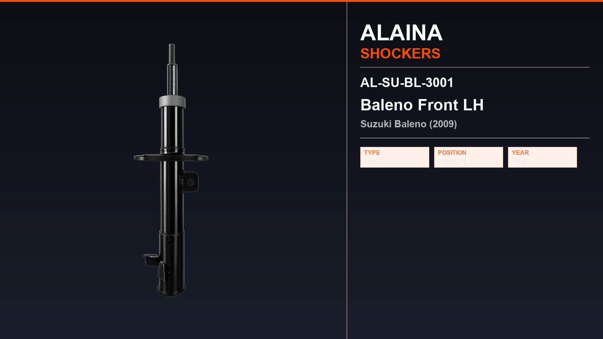
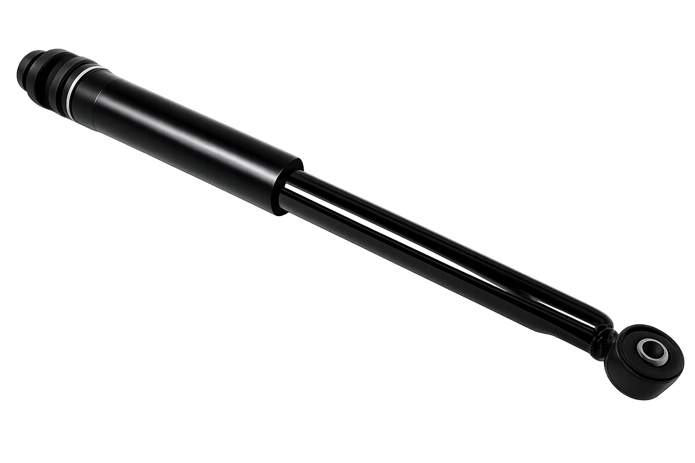

Suzuki · Rare Strut / Shock Absorber
Baleno Rear AL-SU-BL-3009
Alaina rare strut for Suzuki Baleno (2009). Listed in Technical Catalogue No.04. Built to OE reference dimensions and pressure-tested before dispatch.

")
Fitment
This rare strut is catalogued for Suzuki Baleno (2009). Confirm the OE number and the old unit before ordering. For the same vehicle see other Alaina Suzuki parts below.